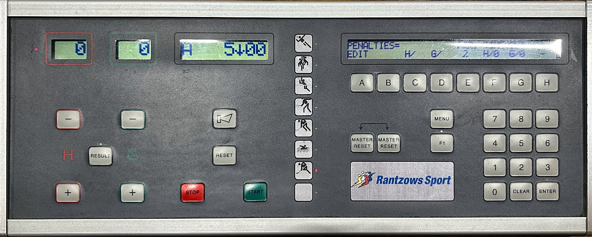
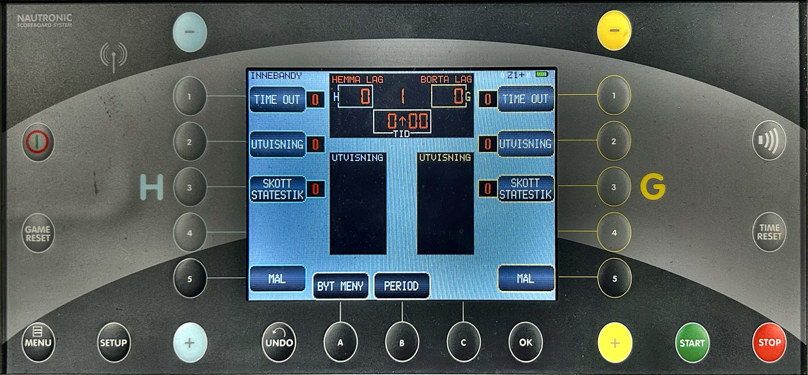
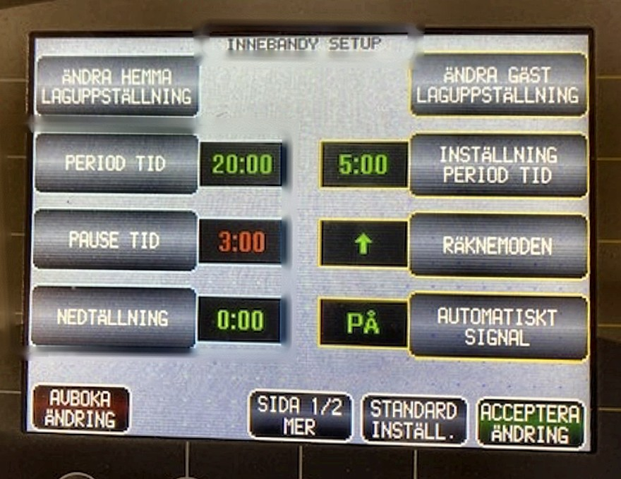

Översikt
Den här lathunden tar dig steg för steg genom det sekretariatet behöver göra under en innebandymatch i Segeltorps hallar. I de flesta hallar styrs tavlan med en Nautronic NAUCON-1000 — det är den lathunden utgår från. Tomtbergahallen har en annan pult; se Hallarna.
- Hallarna — var konsolen finns och vilken det är
- Konsolen — vilka knappar är vilka
- Innan matchen — fysisk förberedelse + checklista på tavlan
- Under matchen — 4-manna (bara klockan)
- Under matchen — 5-manna (mål, utvisningar, straffslag)
- Efter matchen — städa undan
- Var där minst 30 minuter innan matchstart. Då hinner du gå igenom checklistan nedan i lugn och ro innan det börjar bli rörigt.
- Felregistreringar går att rätta. Fel mål tas bort med −-knappen, och en felaktig utvisning går att rätta i nästa avblåsning. Inget du trycker under matchen är permanent — du behöver inte vara perfekt i realtid. (Det enda som nollar allt är GAME RESET, och den trycker du först när matchen är slut.)
- När matchen är igång är det mesta du gör START, STOP och +. Resten är specialfall.
Hallarna
Segeltorp spelar hemmamatcher i flera hallar. Uppdraget i sekretariatet är detsamma överallt, men konsolen förvaras på olika ställen — och i Tomtbergahallen är det en annan sorts konsol.
Utsäljehallen
- Konsol: Nautronic NAUCON-1000, den som resten av lathunden beskriver.
- Var: i kassaskåpet i förrådet. Ledarna släpper in dig i förrådet.
- Efter matchen: lägg tillbaka konsolen i kassaskåpet och koppla in laddkabeln.
Glömstahallen och Fleminghallen
- Konsol: samma Nautronic NAUCON-1000 — följ lathunden som vanligt.
- Var: fråga ledarna var konsolen förvaras.
Tomtbergahallen
- Konsol: en Rantzows Sport-pult. Den styr samma tavla med samma START och STOP, men utan pekskärm — resten fungerar annorlunda. Läs avsnittet nedan innan matchen.
- Var: i förrådet. Nyckeln till förrådet ligger i en nyckelgömma i hallen; ledarna har koden.
- Efter matchen: lägg tillbaka pulten i förrådet.
Tomtbergahallen — så fungerar Rantzows-pulten

Det som skiljer från Nautronic
- Ingen pekskärm. Utvisning, time-out, period och inställningar görs med bokstavsknapparna A–H. Vad varje knapp gör står i den högra displayen, rakt ovanför knappen — läs displayen innan du trycker.
- Displayen kan stå på engelska. PENALTIES = utvisning, EDIT = ändra, TIME-OUT som vanligt.
- Ställningen syns inte på tavlan förrän du trycker RESULT. + och − ändrar bara siffrorna på pulten. Lampan vid RESULT lyser när pulten och tavlan visar olika.
- Nollställ matchen genom att trycka på båda MASTER RESET samtidigt. Det motsvarar GAME RESET.
Innan matchen
- Nollställ: tryck båda MASTER RESET samtidigt.
- Rätt sport: lampan ska lysa vid innebandysymbolen, näst nederst i raden med sportsymboler i mitten. Lyser den vid en annan sport: tryck MENU (inställningar), sedan B (EXIT) till huvudmenyn. Bläddra med E/F till INNEBANDY och välj med ENTER.
- Tider: tryck MENU för inställningarna.
- E (TID) — skriv periodtiden med sifferknapparna, t.ex. 2000 för 20:00 (4-manna) eller 1500 för 15:00 (5-manna), och tryck ENTER. CLEAR raderar en felskriven siffra.
- F (PAUS) — 300 för 3:00 (4-manna) eller 500 för 5:00 (5-manna), ENTER.
- G växlar mellan att räkna upp och ner. Klockan ska räkna uppåt.
- H ska stå på AUTO, så att tavlan tutar själv när perioden är slut.
- Spara med A och gå tillbaka till matchläget med MENU.
Under matchen
- Klockan: START och STOP, precis som vanligt.
- Periodslut: tavlan tutar och pulten byter själv till paustid. Tryck START för att starta pausens nedräkning. När pausen är slut tutar tavlan igen — tryck START när domaren blåser igång nästa period. (Precis som på Nautronic.)
- 4-manna — mål: stoppa klockan som vanligt, men tryck aldrig RESULT. Du kan räkna målen med + på pulten utan att de syns på tavlan — anteckna dem ändå.
- 5-manna — mål: STOP, sedan + för rätt lag (röd H = hemma, grön G = gäst) och därefter RESULT så att målet syns på tavlan. Fel mål: − och sedan RESULT.
- 5-manna — utvisning: STOP. Tryck C för hemma eller D för gäst, skriv spelarens nummer och tryck ENTER. Välj sedan utvisning: A = 2, D = 2+2, F = 2+10 (övriga val används inte i innebandy). Bekräfta med ENTER. Fel utvisning: gör samma sak och tryck G (RESET), som raderar spelarens utvisningar.
- Mål under utvisning: ska en 2:a avbrytas (samma regler som på Nautronic, se 5-manna) och visar pulten RESET … UTVISNING efter målet: tryck bokstaven under spelarens nummer — eller MENU om ingen utvisning ska avbrytas. Visas den inte: ta bort utvisningen själv med C/D → spelarens nummer → ENTER → G (RESET).
- Time-out: STOP när domaren beviljar den. När domaren blåser för att time-outen börjar trycker du F (hemma) eller G (gäst) — 30 sekunder räknas ner direkt på tavlan, och den tutar vid noll. Tryck START när domaren blåser igång; det startar matchklockan. Fel lag: tryck H och sedan samma bokstav för att ångra.
Efter matchen
- Kontrollera att resultatet är antecknat eller inlagt.
- Tryck båda MASTER RESET samtidigt.
- Lägg tillbaka pulten i förrådet.
Avsnittet bygger på Rantzows användarmanual (version 3.55) och ett foto av pulten i Tomtbergahallen. Gör pulten något annat än det som står här — fråga domaren.
Konsolen — knappöversikt
Konsolen är det du som sekretariat använder för att styra resultattavlan på väggen. All information — klocka, ställning, period, utvisningar — skickas trådlöst från konsolen till tavlan, så det du trycker här syns några sekunder senare på storbildstavlan.
Den orange ringen runt START och STOP i bilden nedan visar knapparna du kommer trycka mest under en match.

Fysiska knappar du kommer använda
- START / STOP — gröna och röda knappen längst ner till höger. Startar och stoppar matchklockan.
- + — lägger till ett mål: blå + nere till vänster (bredvid SETUP) för hemma, gul + nere till höger (bredvid START) för gäst. − (uppe, ovanför respektive lags sifferknappar) drar bort ett mål om du registrerat fel. Används bara på 5-manna — på 4-manna visas inte ställningen.
- GAME RESET — nollar hela matchen (ställning, period, klocka, utvisningar). Tryck den bara före och efter match.
- SETUP — öppnar inställningsmenyn (sport, periodtid, paustid…).
- OK — bekräftar val. UNDO — backar senaste valet.
- TIME RESET — nollar bara klockan (utan att röra ställning/period).
Pekskärmen
Stora skärmen i mitten är touch. Under match visar den knappar för TIME OUT, UTVISNING, SKOTT STATISTIK och MÅL för respektive lag, samt PERIOD och BYT MENY nere. I setup-menyn visar den inställningarna.
1. Innan matchen
Fysisk förberedelse
- Hämta bord och stolar till sekretariatet. Finns i förrådet. Ställs vid sargen på lämpligt ställe i hallen.
- Hämta konsolen från kassaskåpet i förrådet. Var den förvaras varierar mellan hallar — se Hallarna.
- Kolla batterinivån på konsolen. Är den låg: hämta laddaren (ligger i samma kassaskåp) och plugga in vid sekretariatsbordet.
- Lägg fram minst 3 extra-bollar. Ta dem ur bollpåsen som tränarna har med till uppvärmningen. De kastas in till domaren vid behov under matchen (när bollen försvinner ut, går sönder, osv.).
- 5-manna: ställ fram två utvisningsstolar. En stol per lag, vid sargen nära sekretariatsbordet. (Hoppa över det här på 4-manna — där sitter en utvisad spelare av sin tid i det egna båset.)
- 5-manna: ni ska vara två i sekretariatet, och ni behöver inloggning till Mitt iBIS. En sköter tavlan (tidtagare), den andra för det digitala matchprotokollet i Mitt iBIS (protokollförare): mål, målskyttar, assist, utvisningar (tid, nummer, typ och orsak), straffslag samt period- och matchstart/slut. Hemmalaget ansvarar för att matchen rapporteras. Be Segeltorps ledare om inloggning innan matchen börjar — själva användningen av Mitt iBIS gås inte igenom här. (Hoppa över på 4-manna — där förs inget protokoll i sekretariatet.)
Checklista på tavlan
Gå igenom de fyra punkterna nedan i ordning. Är allt redan rätt? Bra — då är du klar. Om något inte stämmer: klicka på "Så fixar du det" under den punkten för stegvisa instruktioner.
-
Är konsolen på? Pekskärmen ska lysa.
Så fixar du det
Tryck på strömknappen — den runda röd/gröna knappen med strömsymbol på vänster sida, ovanför GAME RESET. Vänta några sekunder.
-
Står det INNEBANDY på pekskärmen? (uppe till vänster på skärmen)
Så fixar du det — fel sport visas
- Tryck på BYT MENY-rutan på pekskärmen (en av de svarta rutorna nere på skärmen).
- Välj INNEBANDY i listan.
Det går också att trycka på den runda sifferknappen (1–5) som sitter bredvid INNEBANDY i listan.
-
Är tavlan nollställd? Ställningen ska stå på 0–0, perioden på 1 och klockan på 0:00 (på skärmen står det 0↑00 — pilen betyder att klockan räknar uppåt, vilket är det reglerna föreskriver). Det viktiga är att inget hänger kvar från en föregående match.
Så fixar du det — gör en game reset
- Tryck på GAME RESET på vänster sida av konsolen.
- Konsolen frågar om bekräftelse. Tryck OK (eller ACCEPTERA ÄNDRING på pekskärmen).
- Pekskärmen ska nu visa 0–0, period 1 och klockan på 0:00.
GAME RESET nollar ställning, period och klocka. Blanda inte ihop: GAME RESET är inte samma sak som "Total återställning". Total återställning raderar alla inställningar och ska aldrig köras under en matchdag. Du gör den inte av misstag — den kräver att man håller in flera knappar samtidigt vid uppstart. -
Stämmer tiderna? Tryck SETUP på konsolen — då öppnas INNEBANDY SETUP där du ser tiderna. De ska vara:
- PERIOD TID — 15:00 för 5-manna (seriematch 3 × 15), 20:00 för 4-manna (2 × 20). På cup kan det vara annat — se Cuper.
- PAUSE TID — 5:00 för 5-manna, 3:00 för 4-manna (pausen får vara 3–5 minuter; domaren bestämmer när spelet startar igen)
- NEDTÄLLNING — 0:00 (ja, det stavas verkligen så på skärmen)
Kolla också att RÄKNEMODEN står på ↑ (klockan räknar uppåt).

Så här ser INNEBANDY SETUP ut, här inställd för 4-manna (20:00 och 3:00). Ringarna visar värdena du kontrollerar: de tre tiderna till vänster och RÄKNEMODEN till höger. Så fixar du det — något stämmer inte
- Är du inte redan i SETUP — tryck SETUP på konsolen (se bild nedan).
- Tryck på det värde du vill ändra på pekskärmen — t.ex. PERIOD TID.
- Ett numeriskt tangentbord visas. Skriv in det rätta värdet (t.ex. 15:00).
- Tryck ACCEPTERA ÄNDRING (gröna rutan nere på pekskärmen).
- Upprepa för andra värden om de också är fel.
- När alla stämmer: tryck ACCEPTERA ÄNDRING en sista gång för att gå tillbaka till matchläget.
Ett tryck på SETUP öppnar INNEBANDY SETUP. Viktigt: ändra PERIOD TID till vänster — inte INSTÄLLNING PERIOD TID till höger. Den högra ändrar bara standardvärdet, inte den faktiska periodtiden för matchen som ska spelas nu.Tryckte du på fel värde? Tryck AVBOKA ÄNDRING (röda rutan nere till vänster på pekskärmen) eller UNDO på konsolen.När värdena stämmer: tryck ACCEPTERA ÄNDRING (gröna rutan nere på pekskärmen) för att stänga setup.
2. Under matchen — 4-manna
På 4-manna används tavlan bara för matchklockan. På Blå nivå (9–12 år) får resultatet inte visas på tavlan, och sekretariatet för inget matchprotokoll — det står i Svensk Innebandys och Stockholms Innebandyförbunds bestämmelser.
Utvisningar och straffslag finns på 4-manna, men de läggs inte in på tavlan. En utvisad spelare sitter av 2 minuter i sitt eget bås och laget spelar med fullt antal — domaren säger till lagets ledare när spelaren får komma tillbaka. Time-out finns inte på 4-manna.
Det här är allt du gör under matchen:
- Periodstart: tryck START (gröna knappen) när domaren blåser igång.
- Vid mål, utvisning och straffslag: tryck STOP. Klockan ska stoppas vid de tre tillfällena även på 4-manna. Tryck START igen när domaren blåser igång.
- Vid trippelsignal — tre korta signaler från domaren, t.ex. vid en skadad spelare: tryck STOP. Tryck START igen när domaren blåser igång spelet.
- Vid periodslut: signalhornet ljuder automatiskt. Tryck direkt START för att starta pausens nedräkning (den börjar inte räkna ner av sig själv). När pausen är slut tutar tavlan igen — tryck START en gång till när domaren blåser igång nästa period.
- Vid slutsignal i sista perioden: tryck ingenting mer — matchen är slut. Gå till Efter matchen.
Den orange ringen runt START och STOP i konsolbilden överst på sidan visar var de sitter.
3. Under matchen — 5-manna
5-manna använder START / STOP precis som 4-manna, plus mål, utvisningar och straffslag.
- Mål
- Utvisning
- Straffslag
- Time-out
Huvudflödet
- Periodstart: START.
- Vid mål: tryck STOP direkt. När domaren har dömt mål registrerar du det, medan klockan står still: tryck + (blå nere till vänster för hemma, gul nere till höger för gäst) eller MÅL-rutan på pekskärmen för rätt lag — inte båda, då blir det två mål. Tryck START när domaren blåser igång med tekning på mittpunkten.
- Vid utvisning, straffslag, time-out eller trippelsignal: STOP. Starta igen med START när domaren blåser igång. (Utvisning, straffslag och time-out har egna avsnitt nedan.)
- Vid periodslut: signalhornet ljuder automatiskt. Tryck direkt START för att starta pausens nedräkning (den börjar inte räkna ner av sig själv). När pausen är slut tutar tavlan igen — tryck START en gång till när domaren blåser igång nästa period.
- Vid slutsignal i sista perioden: tryck ingenting mer — matchen är slut. Gå till Efter matchen.
- Felregistrerat mål? Tryck − för det lag som fick målet felaktigt (uppe — blå för hemma, gul för gäst).
Cuper är annorlunda. Varje cup har egna tävlingsbestämmelser — typiskt 2×15 minuter med rullande tid hela vägen och ingen effektiv tid. Innan matchstart: fråga någon Segeltorps-ansvarig om matchtid, paustid och om effektiv tid gäller. Fråga också om time-out gäller. Utvisningar finns alltid.
Utvisning
När domaren visar utvisning (typiskt 2 minuter):
- Tryck STOP så fort domaren blåser av.
- Tryck på UTVISNING-rutan på pekskärmen — på hemmalagets sida (vänster) om hemmalaget ska utvisas, gästlagets sida (höger) annars.
- Ett numeriskt tangentbord visas — skriv in spelarens nummer och bekräfta.
- Välj typ av utvisning på pekskärmen — nästan alltid 2. I innebandy finns de här:
- 2 — vanlig 2-minutersutvisning (det här är 9 av 10 fall).
- 2+2 — "större lagstraff" vid en grövre förseelse. Spelaren sitter två 2-minutersutvisningar i följd.
- 2+10 — osportsligt uppträdande. Laget spelar en färre i 2 minuter. Spelaren sitter sedan ytterligare 10 minuter personligt straff, men laget får sätta in en annan spelare när 2:an är slut.
- Bekräfta med ACCEPTERA ÄNDRING på pekskärmen (eller OK på konsolen). Utvisningen syns nu i lagets UTVISNING-fält mitt på pekskärmen och räknar ner när matchen är igång.
- Tryck START när domaren blåser igång igen.
Flera utvisningar samtidigt på samma lag (ovanligt)
Ibland blir två spelare i samma lag utvisade i nära följd. Då gäller:
- Båda utvisningarna räknas parallellt — laget spelar 3 utespelare mot 5 så länge båda löper.
- Högst två utvisningar per lag räknas samtidigt — laget har aldrig färre än 3 utespelare. Får laget en tredje väntar den och börjar räknas först när en av de andra är slut.
- Lägg in dem i den ordning domaren ger dem — den först givna utvisningen ska in först på pekskärmen.
- Om laget släpper in mål avbryts bara den 2:a som har kortast tid kvar (oftast den som kom först). Den andra fortsätter rulla.
Är du osäker på ordningen — fråga domaren innan du registrerar.
Matchstraff — händer sällan
Matchstraff är det grövsta domaren kan utdöma. Spelaren får inte spela resten av matchen och ska direkt till omklädningsrummet. Laget får dessutom ett större lagstraff (2+2), som sitts av av en annan utespelare som lagkaptenen utser.
- Tekniskt matchstraff — avstängd resten av matchen.
- Lindrigt matchstraff — avstängd resten av matchen och nästa match.
- Grovt matchstraff — avstängd resten av matchen och nästa match, plus anmälan och eventuellt ytterligare straff från förbundet.
På tavlan: registrera 2+2 på numret på spelaren som sitter av straffet (UTVISNING → nummer → 2+2). Notera vilken typ av matchstraff det var i Mitt iBIS — det är där skillnaden mellan dem hanteras, inte på tavlan.
Straffslag
När domaren dömer straffslag:
- Tryck STOP.
- Klockan står still medan straffslaget läggs — du gör inget mer på tavlan under tiden.
- Vid mål: tryck + för rätt lag (blå för hemma, gul för gäst). Ett mål på straffslag avbryter inte en pågående utvisning — kolla att den ligger kvar på skärmen.
- Vid räddning eller miss: ingen ändring på tavlan.
- Tryck START när domaren blåser igång spelet igen.
Time-out
Varje lag har rätt till en (1) time-out per match — inte per period. När den är förbrukad får laget inte begära en till. Om ett lag begär time-out:
- Tryck STOP så fort domaren beviljar time-outen.
- Vänta tills domaren blåser för att time-outen börjar. Då trycker du på TIME OUT-rutan på pekskärmen för rätt lag (vänster sida = hemma, höger = gäst).
- 30-sekundersnedräkningen startar direkt när du trycker på TIME OUT och syns på hallens tavla. Du ska inte trycka START — time-out fungerar annorlunda än resten av konsolen.
- När de 30 sekunderna är slut tutar tavlan automatiskt. Domaren blåser sedan igång spelet — tryck START för att starta matchklockan igen.
4. Efter matchen
- 5-manna: protokoll och resultat. Domarna ska kontrollera och godkänna matchprotokollet direkt efter matchen, och resultatet ska in i Mitt iBIS direkt. På 4-manna: rapportera resultatet till Segeltorps ledare.
- Tryck GAME RESET. Kontrollera först att slutresultatet är antecknat eller inlagt — game reset nollar det. Gör alltid en game reset efter slutsignal — även om det kommer en ny match direkt efteråt — så att nästa sekretariat startar med blank tavla. (Tryck OK för att bekräfta.)
- Är det en ny match direkt efter? Då låter du resten stå (bord, stolar, konsol) — nästa sekretariat tar över.
- Annars: städa undan. Ställ tillbaka bord och stolar. Plocka in utvisningsstolarna (om 5-manna). Stäng av konsolen och lägg den i kassaskåpet (med laddaren om du använt den).
Vid problem
Fråga domarna. De är rutinerade och vet vad som behöver göras.
Vanliga situationer
- Slutsignalen tutade inte vid periodslut: det händer ibland. Säg till domaren — de avslutar perioden ändå när de märker att tiden tagit slut.
- Helt vilse? Säg till domaren vid nästa avblåsning. Det är aldrig pinsamt — de hjälper hellre till än får felaktig tid.